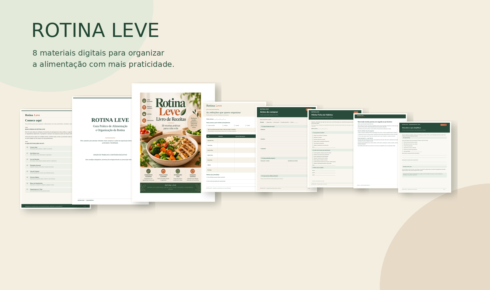
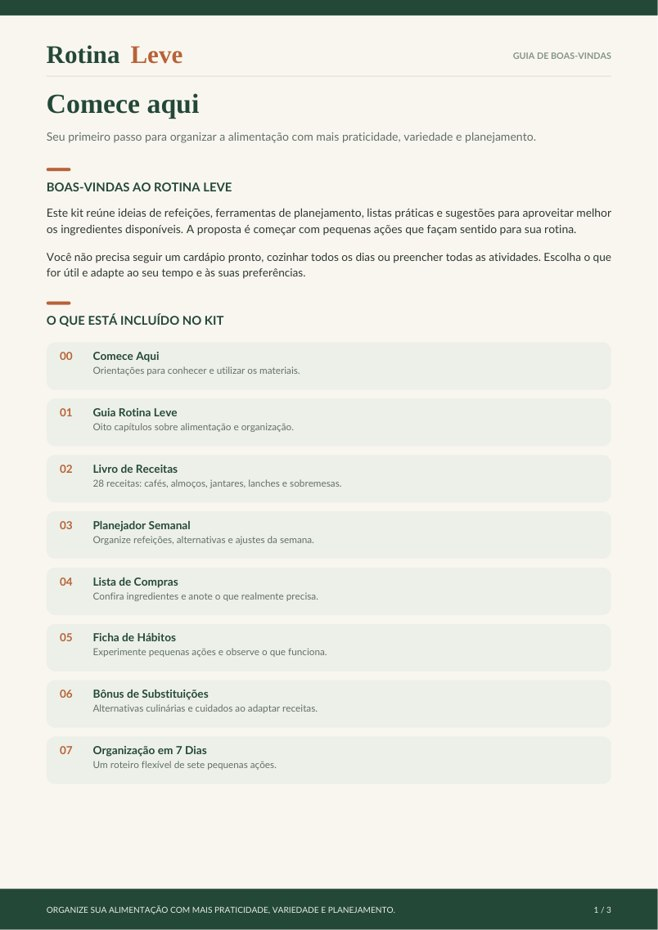
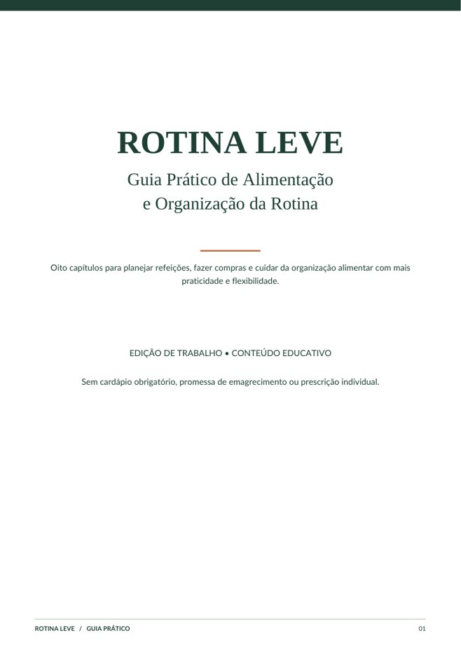
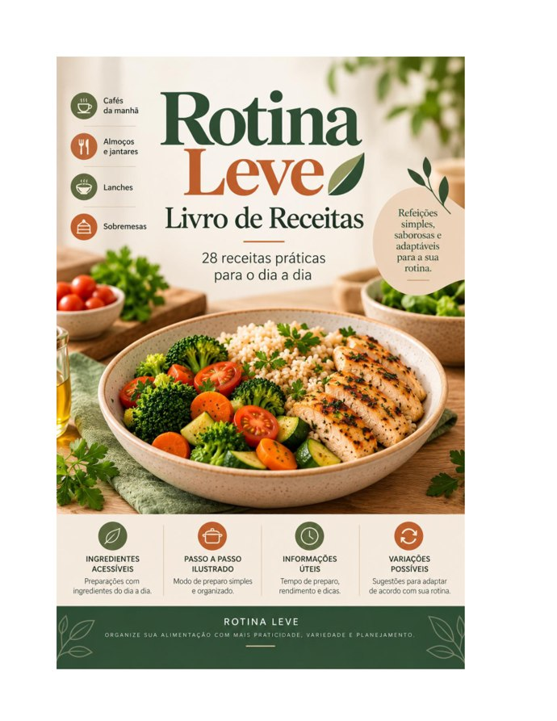
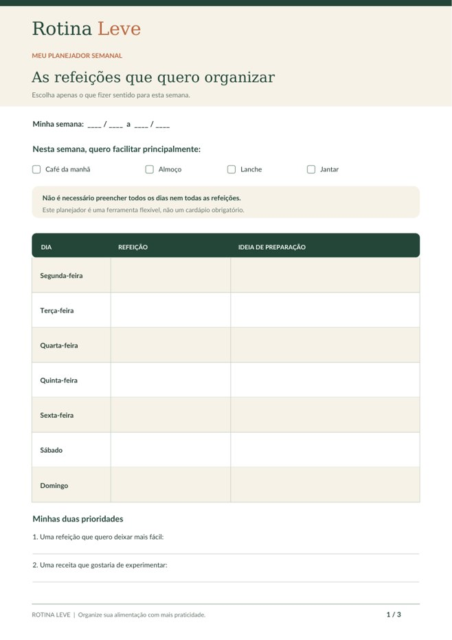
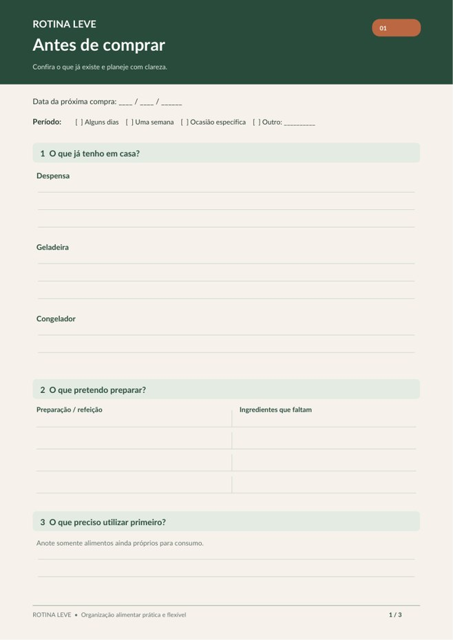
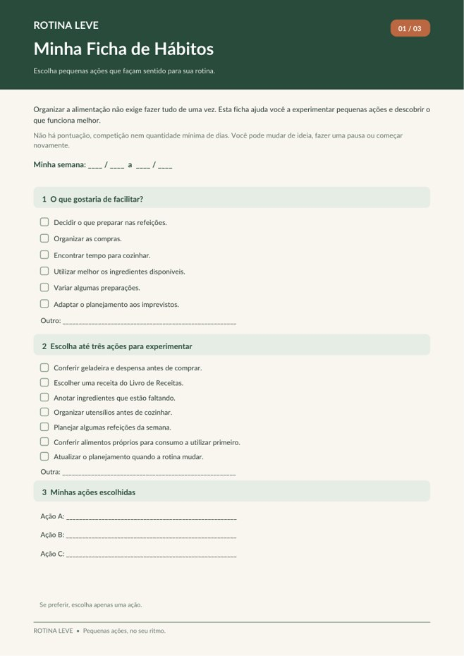
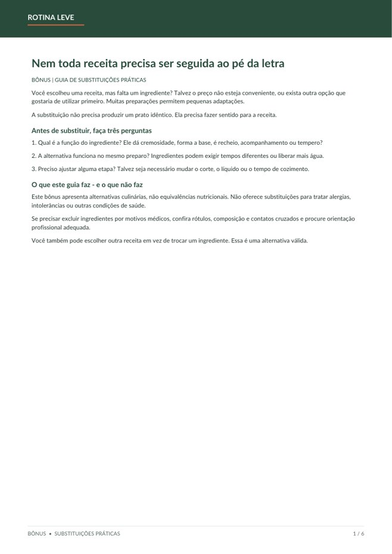
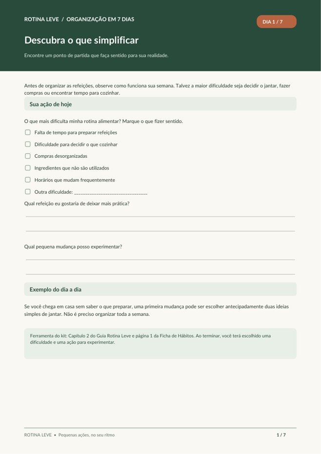

Ideias para refeições
28 preparações ilustradas, com ingredientes, passo a passo e sugestões culinárias de adaptação.
Ideias práticas para planejar refeições, organizar compras e experimentar novos hábitos, respeitando seus horários e preferências.
Conteúdo educativo e de organização, sem cardápios obrigatórios.

Você não precisa reorganizar tudo de uma vez. O Rotina Leve reúne ferramentas para facilitar decisões comuns do cotidiano: o que preparar, o que comprar e como aproveitar melhor o que está disponível.
28 preparações ilustradas, com ingredientes, passo a passo e sugestões culinárias de adaptação.
Planejadores e listas para escolher o que faz sentido na sua semana — sem preencher tudo.
Atividades simples para observar o que facilita sua rotina e ajustar o planejamento.
As imagens abaixo mostram as capas e primeiras páginas reais dos materiais incluídos no kit.

Orientações para começar

8 capítulos sobre alimentação e organização

28 preparações ilustradas

Organização flexível da semana

Compras com mais clareza

Acompanhamento sem cobranças

Alternativas culinárias

Pequenas ações passo a passo
Se falta inspiração para cozinhar, abra o Livro de Receitas. Se o desafio são compras repetidas ou esquecidas, utilize a Lista de Compras. Se quer organizar dois ou três momentos da semana, experimente o Planejador.
Você pode consultar os materiais separadamente, voltar a uma atividade e adaptar tudo à sua rotina.
Não é uma dieta personalizada nem um programa de resultados físicos.
Oito materiais digitais para apoiar a organização alimentar, com leitura e impressão conforme sua preferência.
Preço do produto: R$ 19,90. A Cakto apresenta taxa de serviço de R$ 0,99 no checkout, totalizando R$ 20,89 nas condições consultadas. Confirme o total antes de pagar.
Quero meu Kit Rotina Leve →Pagamento realizado no ambiente externo da Cakto. Antes de divulgar esta página, conclua a validação técnica e confira a entrega automática dos PDFs.
Não. O kit é educativo e voltado à organização das refeições e da rotina. Não substitui acompanhamento individualizado.
Não. Os materiais são independentes e podem ser preenchidos apenas onde forem úteis.
Sim, as 28 receitas possuem imagens ilustrativas geradas por inteligência artificial; elas não representam receitas necessariamente testadas.
O kit foi preparado em oito arquivos PDF. A compra é processada pela Cakto. Verifique as instruções de acesso configuradas no produto após o pagamento.
Não oferece ajustes individualizados para alergias, intolerâncias ou outras condições de saúde. Consulte um profissional habilitado quando necessário.